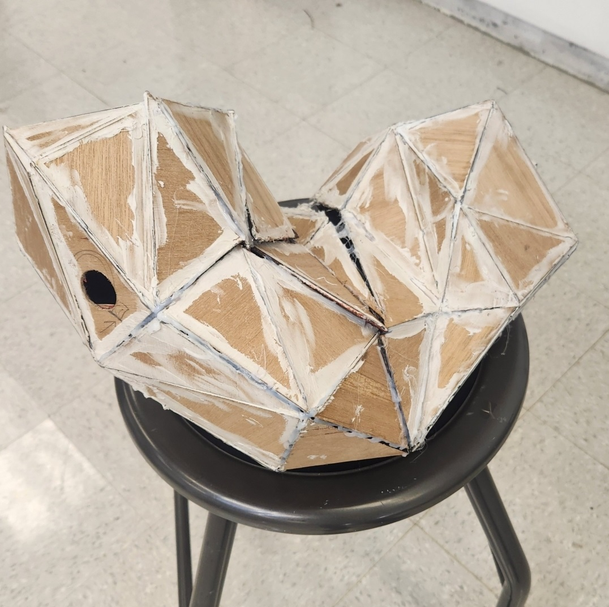
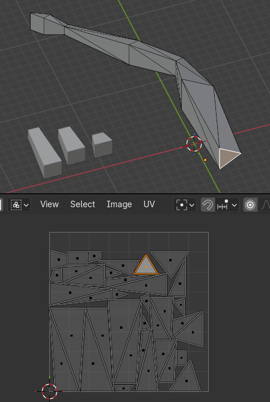
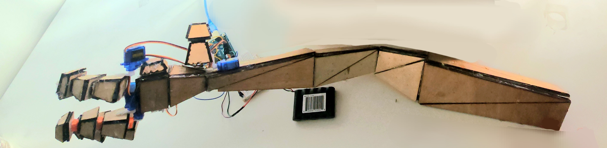

A custom python script in Blender generates and exports a JSON file with data about a 3D model's undistorted UV map. It includes all of the triangles with the positions of their vertices as well as an integer ID for each unique vertex.
Then a Processing 4 (java) script parses the file and generates an SVG image of the triangles in the UV map. It calculates the center of each triangle and uses it to label each vertex with its ID, inside of each triangle.
A laser cutter can be used to cut out the triangles and engrave the text. The model is then assembled by connecting triangles with the same vertex numbers.
(3D model in Blender)
(final SVG image)
(laser cut triangles with numbered vertices)

( [poorly] assembled frame for sculpture)


(3D modeled arm, assembled better and connected up with servos. The project used ML hand-pose detection to copy the user's hand from a video feed.)
 (3D model in Blender)
(3D model in Blender)
 (final SVG image)
(final SVG image)